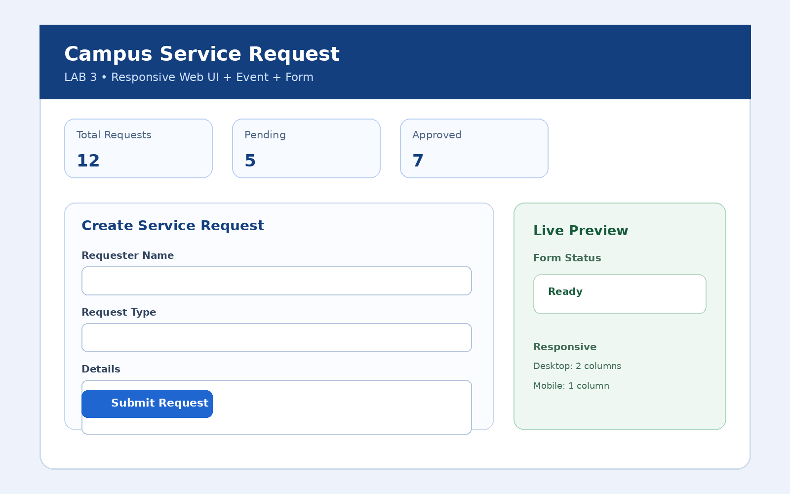
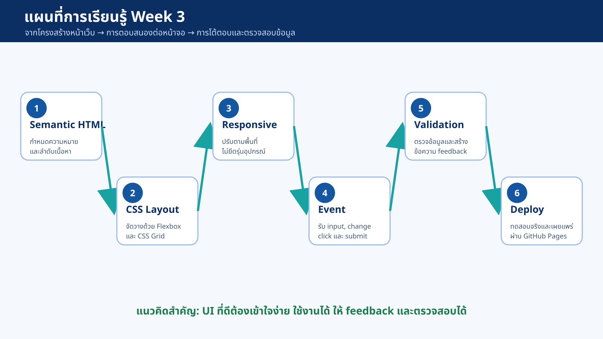
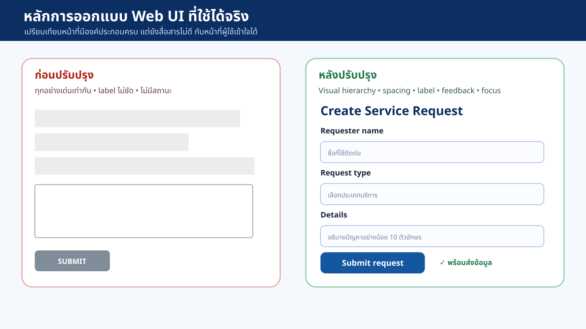
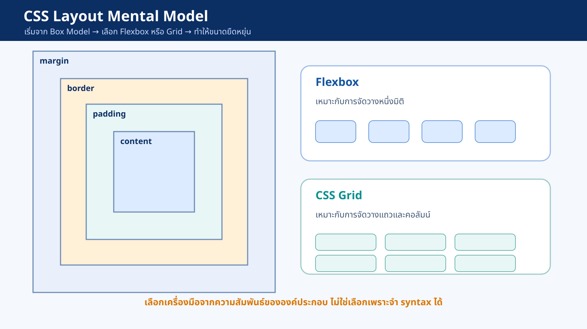
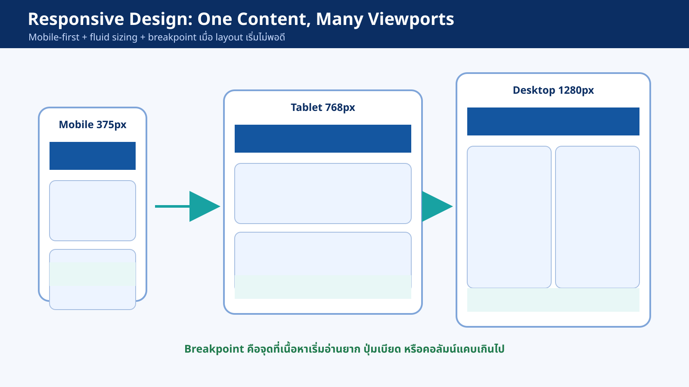
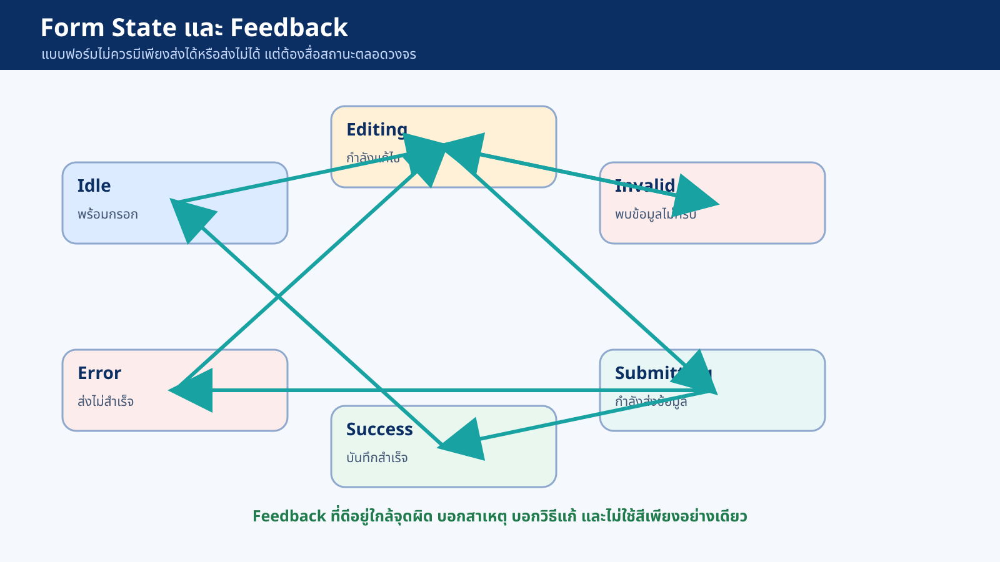
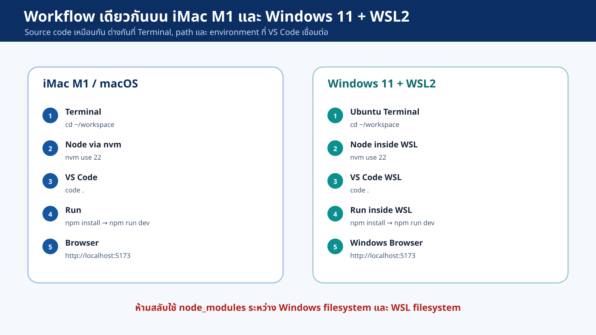

Web UI
Responsive
Event & Form
สื่อสอนเชิงปฏิบัติสำหรับนักศึกษาวิศวกรรมซอฟต์แวร์: เห็นภาพหลักการ → ทดลองจริง → เตรียมทำ LAB 3

จาก JavaScript Modules → สู่ Web UI ที่ใช้งานได้จริง
CLO3
ออกแบบและพัฒนาส่วนติดต่อผู้ใช้แบบ Responsive และ Interactive
เวลาเรียน
ทฤษฎี 1 ชั่วโมง • ปฏิบัติ 4 ชั่วโมง • LAB 3 รายบุคคล
สิ่งที่ต้องเห็นได้จริง
UI อ่านง่าย, layout ปรับตามจอ, event ทำงาน, form validate และ deploy ผ่าน GitHub Pages
Week 03: จากโครงสร้าง → ปฏิสัมพันธ์ → ตรวจสอบ → ส่งมอบ

Web UI คือ “จุดที่ผู้ใช้พบระบบ”
ตอนนี้อยู่ที่ไหน?
ชื่อหน้า ลำดับหัวข้อ และสถานะของงานต้องชัดเจน
ทำอะไรได้?
ปุ่ม ลิงก์ ช่องกรอก ต้องบอกพฤติกรรมด้วยรูปแบบและข้อความ
ต้องกรอกอะไร?
label, hint, required และตัวอย่างช่วยลดความสับสน
ระบบตอบกลับอย่างไร?
loading, success, error, preview หรือรายการใหม่ต้องมองเห็นได้
สามคำนี้เกี่ยวกัน แต่ไม่ใช่เรื่องเดียวกัน
| แนวคิด | คำถามหลัก | ตัวอย่างใน LAB 3 |
|---|---|---|
| UI | สิ่งที่เห็น อ่าน และกดได้ชัดหรือไม่ | หัวข้อ, form field, button, status, list |
| UX | ผู้ใช้ทำงานสำเร็จโดยไม่สับสนหรือไม่ | กรอก → preview → แก้ error → submit สำเร็จ |
| Interaction | เมื่อ click/input/submit แล้วเกิดอะไร | live preview, validation, success feedback |
ออกแบบให้ผู้ใช้ “เดาได้ ตรวจได้ แก้ได้”
Hierarchy
รู้ว่าอะไรสำคัญก่อนหลัง
Consistency
สิ่งเหมือนกันต้องทำงานเหมือนกัน
Affordance
เห็นแล้วรู้ว่ากด/กรอก/เลือกได้
Feedback
ทุก action สำคัญมีผลลัพธ์ให้เห็น
Recovery
ผิดแล้วรู้สาเหตุและแก้ได้
ก่อนปรับปรุง vs หลังปรับปรุง

Interactive Check
กดเลือกสิ่งที่ทำให้ UI ฝั่งขวาดีกว่า
HTML, CSS, JavaScript ต้องแยกบทบาท
HTML
ความหมายและโครงสร้าง
CSS
layout, spacing, responsive, state visual
JavaScript
event, state, validation, render
ถามให้ถูกชั้น ก่อนแก้โค้ด
| ชั้น | หน้าที่หลัก | คำถามตรวจโค้ด | ตัวอย่าง |
|---|---|---|---|
| HTML | ความหมายและโครงสร้าง | ปิด CSS แล้วยังอ่านลำดับเนื้อหาได้ไหม? | header, main, section, form, label |
| CSS | layout, responsive และสถานะภาพ | เปลี่ยนข้อมูลแล้ว style ยังใช้ซ้ำได้ไหม? | Grid, Flexbox, media query, :focus-visible |
| JS | event, state, validation, render | handler สั้นและเรียก function ที่ทำหน้าที่เดียวหรือไม่? | addEventListener, FormData, validate() |
ตัวอย่างแยก HTML → CSS → JavaScript
HTML
<form id="request-form" novalidate> <label for="requester-name">Requester name</label> <input id="requester-name" name="requesterName" /> <small id="requesterName-error" class="error"></small> </form>
CSS
.error { min-height: 1.25rem; color: #b42318; }
input:focus-visible {
outline: 3px solid #f2b705;
}JS
form.addEventListener('submit', handleSubmit);
function handleSubmit(event) {
event.preventDefault();
const data = Object.fromEntries(new FormData(form));
}โครงสร้างที่สื่อความหมาย

- ใช้
<main>สำหรับเนื้อหาหลักหนึ่งส่วน - ใช้
<section>เมื่อมีกลุ่มเนื้อหาพร้อมหัวข้อ - ใช้
<form>เมื่อผู้ใช้ส่งข้อมูล - ใช้
<button>สำหรับ action และ<a>สำหรับ navigation
ตัวอย่างโครงสร้างของ LAB 3
<header class="hero"> <p class="eyebrow">ENGSE203 • LAB 3</p> <h1>Campus Service Request</h1> </header> <main class="container page-grid"> <section aria-labelledby="form-title">...</section> <aside aria-labelledby="preview-title">...</aside> </main>
button เป็น div ที่คลิกได้ ผู้ใช้ keyboard จะใช้งานอย่างไร?ฟอร์มที่อ่านได้ทั้งคนและเครื่องมือ
| ส่วน | หน้าที่ |
|---|---|
label for + input id | คลิก label แล้ว focus ช่องกรอก และช่วย screen reader |
name | เป็น key ที่ FormData ใช้อ่านค่า |
aria-describedby | เชื่อม input กับ hint/error |
role="status" | ประกาศข้อความที่เปลี่ยนหลัง action |
<label for="details">Details</label> <textarea id="details" name="details" aria-describedby="details-hint details-error" minlength="10" required></textarea> <small id="details-hint">อธิบายอย่างน้อย 10 ตัวอักษร</small> <small id="details-error" class="error"></small>
ก่อน Responsive ต้องเข้าใจ “กล่อง”

จำ 3 เรื่อง
- Box Model: content + padding + border + margin
- Cascade: rule หลายชุดแข่งขันกัน
- Layout: เลือกเครื่องมือตามความสัมพันธ์ขององค์ประกอบ
ตั้งค่าให้ layout คาดเดาได้
*, *::before, *::after { box-sizing: border-box; }
:root {
--color-primary: #1456a0;
--space-1: .5rem;
--space-2: 1rem;
--radius: 1rem;
}
body {
margin: 0;
font-family: system-ui, sans-serif;
background: #f4f7fb;
color: #17243a;
}
เลือกจากปัญหา ไม่ใช่จำ syntax
| สถานการณ์ | เครื่องมือ | เหตุผล |
|---|---|---|
| ปุ่มหลายปุ่มในแถวเดียว | Flexbox | จัดตำแหน่งบนแกนเดียวได้ดี |
| ฟอร์ม + preview เป็นสองคอลัมน์ | Grid | ควบคุมแถวและคอลัมน์ชัดเจน |
| รายการ card จำนวนไม่แน่นอน | Grid + auto-fit/minmax | เพิ่ม/ลดจำนวน card โดยไม่เขียน breakpoint หลายจุด |
| icon + text ภายในปุ่ม | Flexbox | จัด alignment ภายใน component |
เนื้อหาเดียวกัน หลาย viewport

- ไม่ใช่สร้างหน้าแยกสำหรับ iPhone/iPad/Desktop
- เริ่ม mobile-first: 1 คอลัมน์ อ่านง่าย
- เพิ่มคอลัมน์เมื่อพื้นที่พอ
- Breakpoint ควรมาจาก “เนื้อหาเริ่มไม่เหมาะสม”
Responsive โดยไม่ต้องเขียน breakpoint ทุกขนาด
.container {
width: min(100% - 2rem, 70rem);
margin-inline: auto;
}
.hero h1 {
font-size: clamp(2rem, 5vw, 3.5rem);
}
.stats {
display: grid;
grid-template-columns: repeat(auto-fit, minmax(10rem, 1fr));
gap: 1rem;
}
ลากเพื่อดู layout เปลี่ยนตามพื้นที่
เกณฑ์ทดสอบ
- ไม่มี horizontal scroll
- label/button ไม่ถูกตัด
- mobile: form ก่อน preview
- desktop: สองคอลัมน์อ่านง่าย
UI ทำงานเป็นวงจร: Action → Event → Handler → State → Render

เข้าใจ Event object ก่อนเขียน handler
| แนวคิด | ความหมาย | ตัวอย่าง |
|---|---|---|
event.target | element ต้นทางที่ผู้ใช้โต้ตอบจริง | input ที่กำลังพิมพ์ |
event.currentTarget | element ที่ผูก listener อยู่ | form ที่รับ input event แบบ bubbling |
preventDefault() | ยกเลิกพฤติกรรมเดิมของ browser | ไม่ให้ form reload หน้าเมื่อ submit |
stopPropagation() | หยุดการเดินทางของ event | ใช้เท่าที่จำเป็น ไม่ใช่คำตอบแรก |
ลองดู target และ currentTarget
Form Listener Zone
Event Log
ผูก listener ที่ form แล้วอ่านค่าจาก FormData
const form = document.querySelector('#request-form');
const preview = document.querySelector('#preview');
form.addEventListener('input', (event) => {
// currentTarget คือ form; target คือ input/select/textarea ที่เปลี่ยน
const data = Object.fromEntries(new FormData(event.currentTarget).entries());
renderPreview(data);
});
form.addEventListener('submit', (event) => {
event.preventDefault();
handleSubmit(event.currentTarget);
});
ทำให้โค้ดอ่านง่ายและย้ายไป React ได้
function handleSubmit(form) {
const data = readForm(form);
const errors = validate(data);
renderErrors(errors);
if (Object.keys(errors).length > 0) {
renderStatus('invalid', 'กรุณาตรวจสอบข้อมูลที่ระบุ');
return;
}
addRequest(data);
renderStatus('success', 'บันทึกคำขอเรียบร้อย');
form.reset();
renderPreview(readForm(form));
}
แบบฟอร์มต้องมีเส้นทางกลับไปแก้ไข

- Idle: พร้อมกรอก
- Editing: กำลังแก้ไข
- Invalid: พบข้อมูลผิด
- Error: ส่งไม่สำเร็จ
- Success: บันทึกสำเร็จ
เร็ว เข้าถึงได้ และปลอดภัย
HTML Constraints
required, minlength, type="email"
เร็วและเข้าถึงได้
JavaScript Client-side
validate(data) และ custom message
ให้ feedback ตามโจทย์
Server-side
ตรวจซ้ำที่ API ก่อนบันทึก
จำเป็นเมื่อเข้าสู่ Back-end
รับข้อมูล → คืน error object โดยไม่แตะ DOM
function validate(data) {
const errors = {};
if (data.requesterName.trim().length < 2) {
errors.requesterName = 'กรุณากรอกชื่ออย่างน้อย 2 ตัวอักษร';
}
if (!data.requestType) {
errors.requestType = 'กรุณาเลือกประเภทคำขอ';
}
if (data.details.trim().length < 10) {
errors.details = 'กรุณาอธิบายอย่างน้อย 10 ตัวอักษร';
}
return errors;
}
ลองกรอกข้อมูลแล้วดู error / success feedback
Feedback
ตัวอย่างครบวงจรของ LAB 3
ใช้ FormData และ textContent
function readForm(form) {
return Object.fromEntries(new FormData(form).entries());
}function renderPreview(data) {
previewName.textContent = data.requesterName || 'ยังไม่ระบุชื่อ';
previewType.textContent = data.requestType || 'ยังไม่เลือกประเภท';
previewDetails.textContent = data.details || 'ยังไม่มีรายละเอียด';
}textContent แทน innerHTML เมื่อแสดงข้อมูลที่ผู้ใช้กรอกCampus Service Request — ทดลองใช้งานจริง
สร้าง DOM node และกำหนด textContent
function addRequest(data) {
const item = document.createElement('li');
const title = document.createElement('strong');
const details = document.createElement('span');
title.textContent = `${data.requesterName} • ${data.requestType}`;
details.textContent = data.details;
item.append(title, details);
requestList.prepend(item);
}
คำสั่งเหมือนกันเมื่ออยู่ใน shell ที่ถูกต้อง

อย่าให้ terminal ทำงานคนละโลกกับ VS Code
# ใช้เหมือนกันทั้ง macOS และ WSL เมื่อเข้าโฟลเดอร์ถูกต้อง nvm use 22 node -v npm -v git status npm install npm run dev
ข้อผิดพลาดที่ต้องป้องกัน
- เปิดโฟลเดอร์ WSL ด้วย VS Code ฝั่ง Windows แบบปกติ
- คัดลอก node_modules ข้าม OS
- เปิด index.html ด้วย double click ทั้งที่ใช้ Vite
- ลืม build ก่อน push docs/
สิ่งที่ต้องทำและคะแนน
| ส่วนประเมิน | สิ่งที่ต้องทำ | คะแนน |
|---|---|---|
| Semantic HTML & Accessibility | landmark, heading, label, name/id, keyboard focus | 0.50 |
| Responsive Layout | mobile-first, Grid/Flexbox, ใช้งานได้ 375px และ Desktop | 0.75 |
| Event & Live Preview | input/submit event, FormData, DOM update ไม่มี console error | 0.75 |
| Validation & Feedback | invalid/success state, ข้อความแก้ไขได้, ไม่ลบข้อมูลเมื่อผิด | 0.50 |
| Git workflow & delivery | feature branch, commits, PR, README, GitHub Pages | 0.50 |
ตรวจให้ครบก่อนส่ง URL
ต้องส่ง
- Repository URL
- Pull Request URL ที่ merge แล้ว
- GitHub Pages URL
- ภาพ Desktop และ Mobile
- README: features, วิธีรัน, test cases, screenshots
ต้องทดสอบ
- Incognito เปิด Pages ได้
- Console ไม่มี error สีแดง
- Tab ผ่าน control ตามลำดับ
- กรอกว่าง/สั้น/ถูกต้อง ได้ feedback
- ทดสอบ 375px, 768px และ Desktop
ถามเพื่อเช็คความเข้าใจก่อนลงมือ LAB
Web UI ที่ดี = โครงสร้างชัด + ปรับตามจอ + ตอบสนอง + ให้ feedback
HTML
สื่อความหมาย
CSS
จัด layout
Responsive
ปรับตามพื้นที่
Event
รับการกระทำ
Form
รับข้อมูล
Feedback
บอกผลและให้แก้ไข